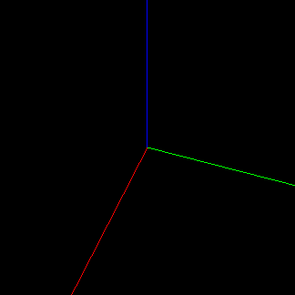
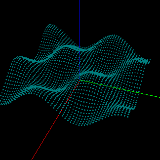
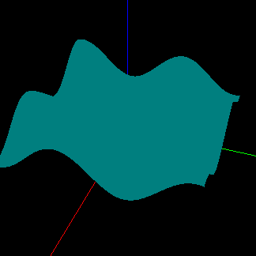
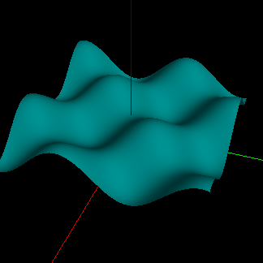

Задача: изображение трёхмерной поверхности, заданной на сетке.
Пример: с использованием C++, freeglut.
Языки:
RU
Пусть в пространстве (x, y, z) задана сеточная функция: узлы в плоскости (x, y) и значения высот (координат z) для каждого из узлов.
Сделаем основание для будущей работы: отобразим координатные оси.
Для ориентации в трехмерном пространстве, отобразим координатные оси.
Плоскость координат (x, y) будем считать осонованием, а по оси координат z
откладывать значения функции, задающей поверхность.
Перед началом рисования, необходимо задать положение камеры в пространстве.
|
 |
|
|
Для описания поверхности как множества точек пространства (x, y, z), зададим
равномерную сетку в плоскости (x, y). Сетка называется равномерной, если
расстояние между соседними узлами, вдоль каждой из осей, не изменяется.
В каждом из узлов известна координата z как функция от (x, y): z = f(x, y).
Будем называть это значение высотой. Множество значений высот для всех узлов
сетки будем называть картой высот.
Создадим некоторую поверхность по известному закону f(x, y). Для начала, изобразим точки поверхности сферами.
|
 |
|
Для рисования сплошной поверхности, необходимо осуществить рисование примитивов
с вершинами в узлах сетки. Разобьём пространство между вершинами на
треугольники.
Поскольку вся необходимая информация содержится в массиве с координатами,
изменяем только функцию отрисовки.
|
|
|
 |
Для создания теней необходимо задать нормаль к поверхности в каждой из вершин.
^ normal
(x2, y2, z2) _____|____
\ | / (x1, y1, z1)
\ | /
\ /
\ /
\/ (x3, y3, z3)
Для треугольника с вершинами (x1, y1, z1), (x2, y2, z2), (x3, y3, z3), перечисленными против часовой стрелки, нормалью является вектор (nx, ny, nz):
nx = y1 * (z2 - z3) + y2 * (z3 - z1) + y3 * (z1 - z2)
ny = x1 * (z3 - z2) + x2 * (z1 - z3) + x3 * (z2 - z1)
nz = x1 * (y2 - y3) + x2 * (y3 - y1) + x3 * (y1 - y2)
Для каждой внутренней вершины (узел которой не принадлежит верхней, левой,
нижней или правой границе сетки) вычислим нормаль как среднее между нормалями
треугольников, содержащих эту вершину.
Для граничных вершин, нормали могут быть скопированы с соседнего слоя внутренних
вершин.
^ 1) nx = dy*(z1-z0); ny = dx*(z2-z1); nz = dx*dy;
| 2) nx = dy*(z2-z3); ny = dx*(z3-z0); nz = dx*dy;
y+dy ______z6_____z5 3) nx = dy*(z0-z4); ny = dx*(z3-z0); nz = dx*dy;
| |****/ | / | 4) nx = dy*(z0-z4); ny = dx*(z4-z5); nz = dx*dy;
| |***/ | 5 / | 5) nx = dy*(z6-z5); ny = dx*(z0-z6); nz = dx*dy;
| |**/ | / | 6) nx = dy*(z1-z0); ny = dx*(z0-z6); nz = dx*dy;
| |*/ 6 | / 4 |
y z1-----z0-----z4
| | 1 / | 3 /*|
| | / | /**| nx = 1/6 * dy * (2 * z1 + z2 - z3 - 2 * z4 - z5 + z6)
| | / 2 | /***| ny = 1/6 * dx * (-z1 + z2 + 2 * z3 + z4 - z5 - 2 * z6)
| | / | /****| nz = dx * dy
y-dy z2-----z3-----*
|
+--- x-dx -- x --- x+dx ---->
|
|
 |
Удобно воспользоваться функционалом OpenGL, позволяющим производить рисование примитивов, указывая индексы вершин внутри наших массивов, вместо явных вызовов glVertex и glNormal.
Используя особый порядок индексов, можно более эффективно осуществить рисование треугольников, образующих ленту (strip), что подходит для нашей задачи: вся сетка может быть разделена на ленты.
0_____2_____4_____6 GL_TRIANGLES: 1, 2, 0, 1, 3, 2, 3, 4, 2, 3, 5, 4,
| /| /| /| 5, 6, 4, 5, 7, 6
| / | / | / | GL_TRIANGLE_STRIP: 0, 1, 2, 3, 4, 5, 6, 7
|/____|/____|/____|
1 3 5 7
Как минимум, это позволяет сэкономить на памяти, выделяемой под хранение индексов. Но главное, что информация, которую мы сообщаем OpenGL об образовании данной конструкции, помогает использовать специализированные методы. Для нас это означает уменьшение времени, требуемого для отрисовки кадра.
При переходе между лентами, меняется направление индексации (справа налево, снизу вверх). Можно понять этот момент, представив сетку в виде единой, сложенной ленты:
8_____9_____10____11 indices: 4, 0, 5, 1, 6, 2, 7, 3, 7, 11, 6, 10, 5, 9, 4, 8
| /| /| /|
| / | / | / |
|/____|/____|/____|
4 /5 /6 /7
| / | / | / |
|/____|/____|/____|
0 1 2 3
/\
/ |\
/ | \
.------ /\ | / 8
/ / |\ |/
/ / | \/
\/ /\ | / 9
/ |\ |/
4_____5_____6_____7/ | \/
| /| /| /|\ | / 10
| / | / | / | \ |/
|/____|/____|/____| \/
0 1 2 3 11
Если сравнить количество кадров в секунду, используя код из примеров, получится
наглядно продемонстрировать преимущества каждого из подходов:
(Для оценки производилась одновременная отрисовка 100 поверхностей, точки
которых заданы одной функцией. Использовались сетки 100x100, все поверхности
на одном уровне, случайного размера. Код, представленный в примерах, не является
оптимальным, поэтому значения, представленные в таблице, носят лишь
оценочный характер. Количество кадров аккумулированно с периодом в 5 секунд.).
+----------------+-------------------+
| Метод | Кадров в секунду |
+----------------+-------------------+
| Триангуляция | 9 |
| Индексирование | 38-40 |
| Ленты | 59 |
+----------------+-------------------+